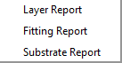

Results Menu
Results Menu
Navigation: OptiChar Menu Commands > Results Menu |
` <idh _characterization_options.htm>`__ ` <idh_optilayer.htm>`__ ` <outputwindow.htm>`__ |

Layer Report - Allows previewing the text with information on the results of the layer characterization. The user can edit this text before printing.
Substrate Report - Allows previewing the text with information about the substrate being loaded into the RAM or with the results of the substrate characterization. The user can edit this text before printing.
Fitting Report - Allows previewing the text with information about the fitting of measurement data by theoretical characteristics. The user can edit this text before printing.
These commands open Output Window representing text output of OptiChar.